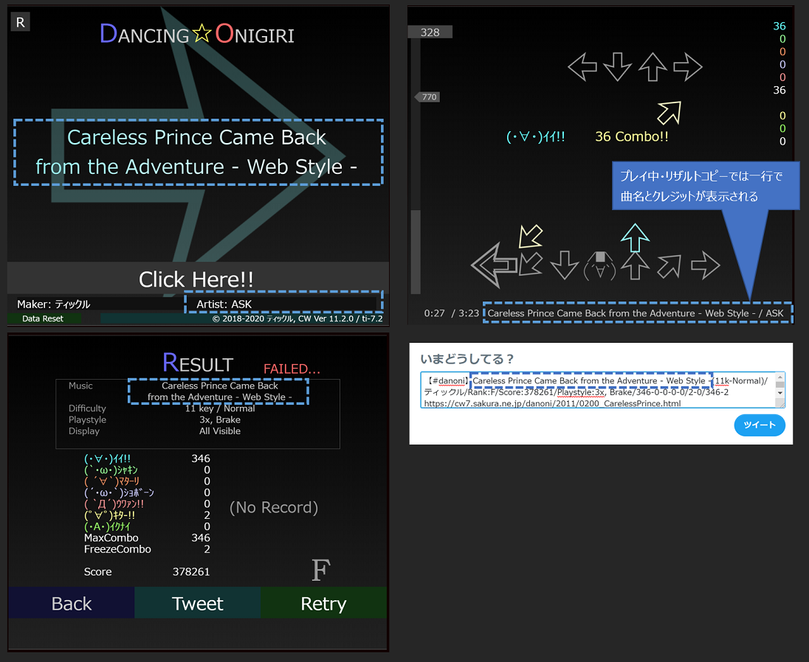

|musicTitle=プチ・マギエ,Napi,http://mart.kitunebi.com/|
|musicTitle=にじいろクレヨン,四葉かげろう,http://www.kagerow.net/$にじいろクレヨン -DR style mix-,AOiRO_Manbow,http://manbow.org/|
|musicTitle=曲名がとても長い曲<br>テストテストテスト,アーティスト名,http://...|
楽曲情報を記述します。
カンマ区切りで、「曲名」「アーティスト名」「アーティストのサイトURL」を指定します。
また、ver4.0.0以降は"$"区切りで2曲目以降を指定できます。
| 番号 | 設定例 | 内容 | 既定値 |
|---|---|---|---|
| 1 | にじいろクレヨン | 曲名を指定。タイトルの曲名もここで指定します。 ※ver3.5.0以降、途中に<br>などをつけることで2行に分けることができます。 |
MusicName |
| 2 | 四葉かげろう | アーティスト名 | ArtistName |
| 3 | http://www.kagerow.net/ | アーティストのサイトURL | |
| 4 | 複数曲搭載の際に、1曲目の曲名を指定。1と分けたいときに使用します。 |
項目1, 4の曲名の改行タグについては、1行で表示した場合によってタグが異なります。
|musicTitle=曲名が長い曲<br>半角スペース入り,アーティスト,http://|
|musicTitle=曲名が長い曲<nbr>半角スペース抜き,アーティスト,http://|
|musicTitle=曲名が長い曲<dbr>全角スペース入り,アーティスト,http://|
|musicTitle=Careless Prince Came Back<br>from the Adventure - Web Style -,ASK,https://cw7.sakura.ne.jp/rdart/?artistId=20|

| Version | 変更内容 |
|---|---|
| v8.2.0 | ・曲名（複数行）を1行で表示する場合に 間を空白で埋めない（全角で埋める）設定を追加 |
| v4.0.0 | ・"$"区切りで2曲目以降を指定できるように変更 ・4番目の項目を追加 |
| v3.5.0 | ・曲名指定部分に<br>を入れることで タイトル・結果画面の曲名表示を2行にできるように変更 |
| v1.0.0 | 初回実装 |